1. Introduction
We all know that there are a number of attacks where an attacker includes some shellcode into a PDF document, which uses some kind of vulnerability in how the PDF document is analyzed and presented to the user to execute malicious code on the targeted system.
The next picture presents the number of vulnerabilities discovered in popular PDF Reader Adobe Acrobat Reader. The number of vulnerabilities is increasing over the years, but there are a little less vulnerabilities discovered this year (but the year isn’t over yet). The most important vulnerabilities are the Code Execution vulnerabilities, which an attacker can use to execute arbitrary code on the target system (if the Acrobat Reader hasn’t been patched yet).
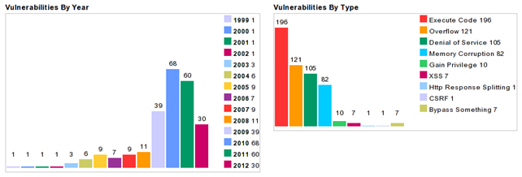This is an important indicator that we should regularly update our PDF Reader, because the number of vulnerabilities discovered recently is quite daunting.
2. PDF File Structure
Whenever we want to discover new vulnerabilities in software we should first understand the protocol or file format in which we’re trying to discover new vulnerabilities. In our case, we should first understand the PDF file format in detail. In this article we’ll take a look at the PDF file format and its internals.
PDF is a portable document format that can be used to present documents that include text, images, multimedia elements, web page links, etc. It has a wide range of features. The first thing we must understand is that the PDF file format specification is publicly available here and can be used by anyone interested in PDF file format. There are almost 800 pages of the documentation for the PDF file format alone, so reading through that is not a one-day quick read, but it takes a lot of time.
PDF has a lot more functions than just text; it can include images and other multimedia elements, it can be password protected, it can execute JavaScript, etc. The basic structure of a PDF file is presented in the picture below:
Every PDF document has the following elements:
– Header: This is the first line of a PDF file and specifies the version number of the used PDF specification which the document uses. If we want to find that out, we can use the hex editor or simply use the xxd command as below:
# xxd temp.pdf | head -n 1 0000000: 2550 4446 2d31 2e33 0a25 c4e5 f2e5 eba7 %PDF-1.3.%......
The temp.pdf PDF document uses the PDF specification 1.3. The ‘%’ character is a comment in PDF, so the above example actually presents the first and second line being comments, which is true for all PDF documents. The following bytes are taken from the output below: 2550 4446 2d31 2e33 0a25 c4e5 and correspond to the ASCII text “%PDF-1.3.%”. What follows are some ASCII characters that are using non-printable characters (note the ‘.’ dots), which are usually there to tell some of the software products that the file contains binary data and shouldn’t be treated as 7-bit ASCII text. Currently the version numbers are of the form 1.N, where the N is from range 0-7.
– Body: In the body of the PDF document, there are objects that typically include text streams, images, other multimedia elements, etc. The Body section is used to hold all the document’s data being shown to the user.
– xref Table: This is the cross reference table, which contains contains the references to all the objects in the document. The purpose of a cross reference table is that it allows random access to objects in the file, so we don’t need to read the whole PDF document to locate the particular object. Each object is represented by one entry in the cross reference table, which is always 20 bytes long. Let’s show an example:
xref 0 1 0000000023 65535 f 3 1 0000025324 00000 n 21 4 0000025518 00002 n 0000025632 00000 n 0000000024 00001 f 0000000000 00001 f 36 1 0000026900 00000 n
We can display the cross reference table of the PDF document by simply opening the PDF with a text editor and scrolling to the bottom of the document. In the example above, we can see that we have four subsections (note the four lines that only contain two numbers). The first number in those lines corresponds to the object number, while the second line states the number of objects in the current subsection. Each object is represented by one entry, which is 20 bytes long (including the CRLF). The first 10 bytes are the object’s offset from the start of the PDF document to the beginning of that object. What follows is a space separator with another number specifying the object’s generation number. After that there is another space separator followed by a letter ‘f’ or ‘n’ to indicate whether the object is free or in use.
The first object has an ID 0 and always contains one entry with generation number 65535 that is at the head of the list of free objects (note the letter ‘f’ that means free). The last object in the cross reference table uses the generation number 0.
The second subsection has an object ID 3 and contains 1 element, the object 3 that starts at an offset 25324 bytes from the beginning of the document. The third subsection has four objects, the first of which has an ID 21 and start at an offset 25518 from the beginning of the file. Other objects have subsequent numbers 22, 23 and 24. All objects are marked with either flag ‘f’ or ‘n’. Flag ‘f’ means that the object may still be present in a file, but is marked free, so it shouldn’t be used. These objects contain a reference to the next free object and the generation number to be used if the object becomes valid again. The flag ‘n’ is used to represent valid and used objects that contain the offset from the beginning of the file and the generation number of the object.
Note that the object zero points to the next free object in the table, the object 23. But since the object 23 is also free, it itself points to the next free object in the table, the object 24. But the object 24 is the last free object on the file, so it’s pointing back to the object zero. If we represent the above cross reference table with every object number it would look as follows:
xref 0 1 0000000023 65535 f 3 1 0000025324 00000 n 21 1 0000025518 00002 n 22 1 0000025632 00000 n 23 1 0000000024 00001 f 24 1 0000000000 00001 f 36 1 0000026900 00000 n
The generation number of the object is incremented when the object is freed, so if the object becomes valid again (changes the flag from ‘f’ to ‘n’), the generation number is still valid without having to increment it. The generation number of object 23 is 1, so if it becomes valid again, the generation number will still be 1, but if it’s removed again, the generation number would increase to 2.
Multiple subsections are usually present in PDF documents that have been incrementally updated, otherwise only one subsection starting with the number zero should be present.
– Trailer: The PDF trailer specifies how the application reading the PDF document should find the cross reference table and other special objects. All PDF readers should start reading a PDF from the end of the file. An example trailer is presented below:
trailer << /Size 22 /Root 2 0 R /Info 1 0 R >> startxref 24212 %%EOF
The last line of the PDF document contains the end of file string ‘%%EOF’. Before the end of file tag, there is a line with a string startxref that specifies the offset from beginning of the file to the cross reference table. In our case the cross reference table starts at offset 24212 bytes. Before that is a string trailer that specifies the start of the Trailer section. The contents of the trailer sections are embedded within the << and >> characters (this is a dictionary that accepts key-value pairs). We can see that the trailer sections defines several keys, each of them for a particular action. The trailer section can specify the following keys:
– /Size [integer]: specifies the number of entries in the cross reference table (counting the objects in updated sections as well). The used number shouldn’t be an indirect reference.
– /Prev [integer]: specifies the offset from the beginning of the file to the previous cross reference section, which is used if there are multiple cross reference sections. The number should be a cross reference.
– /Root [dictionary]: specifies the reference object for the document catalog object, which is a special object that contains various pointers to different kind of other special objects (more about that later).
– /Encrypt [dictionary]: specifies the document’s encryption dictionary.
– /Info [dictionary]: specifies the reference object for the document’s information dictionary.
– /ID [array]: specifies an array of two byte unencrypted strings that form a file identifier.
– /XrefStm [integer]: specifies the offset from the beginning of the file to the cross-reference stream in the decoded stream. This is only present in hybrid-reference files, which is specified if we would also like to open documents even if the applications don’t support compressed reference streams.
We must remember that the initial structure can be modified if we update the PDF document at a later time. The update usually appends additional elements to the end of the file.
Ethical Hacking Training – Resources
3. Incremental Updates
The PDF has been designed with incremental updates in mind, since we can append some objects to the end of the PDF file without rewriting the entire file. Because of this, changes to a PDF document can be saved quickly. The new structure of the PDF document can be seen in the picture below:
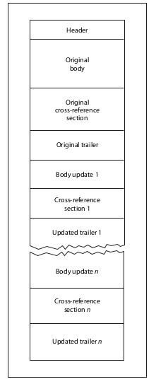
We can see that the PDF document still contains the original Header, Body, Cross-reference Table and the Trailer. Additionally, there are also other Body, Cross-reference and Trailer sections that were added to the PDF document. The additional cross-reference sections will contain only the entries for objects that have been changed, replaced or deleted. Deleted objects will stay in the file, but will be marked with a flag ‘f’. Each trailed needs to be terminated by the ‘%%EOF’ tag and should contain the /Prev entry which points to the previous cross-reference section.
In PDF versions 1.4 and higher, we can specify the Version entry in the document’s catalog dictionary to override the default version from the PDF header.
4. Example
Let’s present a simple PDF example and analyze it. Let’s download a sample PDF document from here and analyze it. Upon opening this PDF document it looks as shown below:
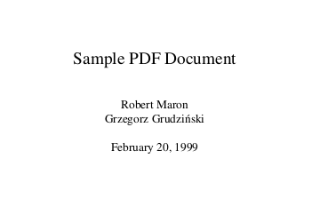
The cross-reference and trailer sections are presented in the picture below:
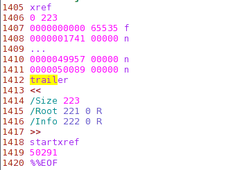
The cross-reference section has been reduced for clarity. The cross-reference sections contains one subsections that itself contains 223 objects. The trailer section starts at byte offset 50291, includes 223 objects where the Root element points to object 221 and the Info element points to object 222.
In the next section we’ll take a look at the PDF structure’s basic data types.
5. PDF Data Types
The PDF document contains eight basic types of objects described below. Namely these types of objects are: booleans, numbers, strings, names, arrays, dictionaries, streams and the null object. Objects may be labeled so that they can be referenced by other objects. A labeled object is also called an indirect object.
5.1. Booleans
There are two keywords: true and false that represent the boolean values.
5.2. Numbers
There are two types of numbers in PDF document: integer and real. An integer consists of one or more digits optionally preceded by a sign plus (character ‘+’) or minus (character ‘-‘). An example of integer objects may be seen below:
123 +123 -123
The real value can be represented with one or more digits with an optional sign and a leading, trailing or embedded decimal point (period – character ‘.’). An example of real numbers can be seen below:
123.0 -123.0 +123.0 123. -.123
5.3. Names
The names in PDF documents are represented by a sequence of ASCII characters in the range 0x21 – 0x7E. The exception are the characters: %, (, ), <, >, [, ], {, }, / and #, which must be preceded by a slash. An alternative representation of the characters is with their hexadecimal equivalent, preceded by the character ‘#’. There is a limitation of the length of the name element, which may be only 127 bytes long.
When writing a name a slash must be used to introduce a name; the slash is not part of the name, but is a prefix indicating that what follows is a sequence of characters representing the name. If we want to use whitespace or any other special character as part of the name it must be encoded with 2-digit hexadecimal notation.
The examples of names can be seen in the table below, that is taken from [1]:
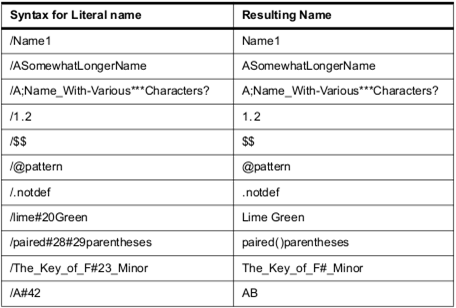
5.4. Strings
Strings in a PDF document are represented as a series of bytes surrounded by parenthesis or angle brackets, but can be a maximum of 65535 bytes long. Any character may be represented by ASCII representation, and alternatively with octal or hexadecimal representations. Octal representation requires the character to be written in the form \ddd, where ddd is an octal number. Hexadecimal representation required the character to be written in the form <dd>, where dd is a hexadecimal number.
An example of representing a string embedded in parentheses can be seen below:
(mystring)
An example of representing a string embedded in angle brackets can be seen below (the hexadecimal representation below is the same as above and it reads as ‘mystring’):
<6d79737472696e67>
We can also use special well known characters when representing a string: those are: \n for new line, \r for carriage return, \t for horizontal tabulator, \b for backspace, \f for form feed, \( for left parenthesis, \) for right parenthesis and \\ for backslash.
5.5. Arrays
Arrays in PDF documents are represented as a sequence of PDF objects, which may be of different types and enclosed in square brackets. This is why an array in a PDF document can hold any object types, like numbers, strings, dictionaries, and even other arrays. An array may also have zero elements. An array is presented with a square bracket. An example of an array is presented below:
123 123.0 true (mystring) /myname]
5.6. Dictionaries
Dictionaries in a PDF document are represented as a table of key/value pairs. The key must be the Name object, whereas the value can be any object, including another dictionary. The maximum number of entries in a dictionary is 4096 entries. A dictionary can be presented with the entries enclosed in double angle brackets << and >>. An example of a dictionary is presented below:
<< /mykey1 123
/mykey2 0.123
/mykey3 << /mykey4 true
/mykey5 (mystring)
>>
>>
5.7. Streams
A stream object is represented by a sequence of bytes and may be unlimited in length, which is why images and other big data blocks are usually represented as streams. A stream object is represented by a dictionary object followed by the keywords stream followed by newline and endstream.
An example of a stream object can be seen below:
<<
/Type /Page
/Length 23 0 R
/Filter /LZWDecode
>>
stream
…
endstream
All stream objects shall be indirect objects and the stream dictionary shall be a direct object. The stream dictionary specifies the exact number of bytes of the stream. After the data there should be a newline and the endstream keyword.
Common keywords used in all stream dictionaries are the following (note that the Length entry is mandatory):
– Length: how many bytes of the PDF file are used for the stream’s data. If the stream contains a Filter entry, the Length shall specify the number of bytes of encoded data.
– Type: the type of the PDF object that the dictionary describes.
– Filter: the name of the filter that will be applied in processing the stream data. Multiple filters can be specified in the order in which they shall be applied.
– DecodeParms: a dictionary or an array of dictionaries used by the filters specified by Filter. This value specifies the parameters that need to be passed to the filters when they are applied. This isn’t necessary if the filters use the default values.
– F: specifies the file containing the stream data.
– FFilter: the name of the filter to be applied in processing the data found in the stream’s external file.
– FDecodeParms: a dictionary or an array of dictionaries used by the filters specified by FFilter.
– DL: specifies the number of bytes in the decoded stream. This can be used if enough disk space is available to write a stream to a file.
– N: the number of indirect objects stored in the stream.
– First: the offset in the decoded stream of the first compressed object.
– Extends: specifies a reference to other object stream, which form an inheritance tree.
The stream data in object stream will contain N pairs of integers, where the first integer represents the object number and the second integer represents the offset in the decoded stream of that object. The objects in object streams are consecutive and don’t need to be stored in increasing order relative to object number. The First entry in dictionary identifies the first object in object stream.
We shouldn’t store the following information in an object stream:
– stream objects
– objects with a generation number that is not equal to zero
– document’s encryption dictionary
– indirect object of the Length entry in object stream dictionary
– document catalog, linearization dictionary, page objects
In PDF 1.5, cross-reference information may be stored in a cross-reference stream instead of in a cross-reference table. Each cross-reference stream contains the information equivalent to the cross-reference table and trailer.
5.8. Null Object
The null object is represented by a keyword null.
5.9. Indirect Objects
First of all, we must know that any object in a PDF document can be labeled as an indirect object, which gives the object a unique object identifier, which other objects can use to reference the indirect object. An indirect object is a numbered object represented with keywords obj and endobj. The endobj must be present in its own line, but the obj must occur at the end of object ID line, which is the first line of the indirect object. The object ID line consists of object number, generation number and keyword ‘obj’. An example of an indirect object is as follows:
2 1 obj 12345 endobj
In the example above, we’re creating a new indirect object, which holds the number 12345 object. By declaring an object an indirect object, we are able to use it in the PDF document cross-reference table and reuse it by any page, dictionary, etc, in the document. Since every indirect object has its own entry in the cross-reference table, the indirect objects may be accessed very quickly.
The object identifier of the indirect object consists of two parts; the first part is a object number of current indirect object. The indirect objects don’t need to be numbered sequentially in the PDF document. The second part is the generation number, which is set to zero for all objects in a newly created file. This number is later incremented when the objects are updated.
We can refer to the indirect objects with indirect reference, which consist of the object number, the generation number and the keyword R. To reference the above indirect object, we must write something like below:
2 1 R
If we’re trying to reference an undefined object, we’re actually referring to a null object.
6. Document Structure
A PDF document consists of objects contained in the body section of a PDF file. Most of the objects in a PDF document are dictionaries. Each page of the document is represented by a page object, which is a dictionary that includes references to the page’s contents. Page objects are connected together and form a page tree, which is declared with an indirect reference in the document catalog.
The whole structure of the PDF document can be represented with the picture below [1]:
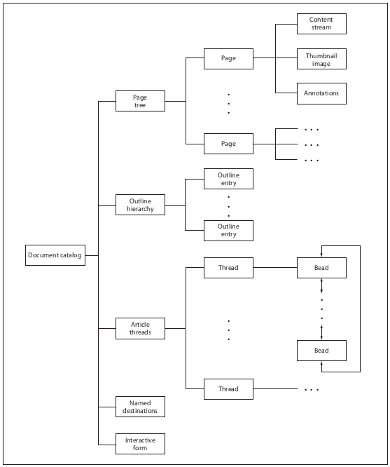
In the picture above, we can see that the document catalog contains references to the page tree, outline hierarchy, article threads, named destinations and interactive form. We won’t go into details what each of those sections do, but we’ll present just the most important section, the Page Tree.
6.1. Document Catalog
From the picture above, we can see that the Document Catalog
is the root of the objects in the PDF document. We’ve already said that it is the /Root element in the Trailer PDF section that specifies the document catalog. The document catalog contains references to other objects that define the document’s contents. It also contains the information that declares how the document will be displayed on the screen. The entries in the document catalog are as follows:
– /Type: the type of the PDF object the directory describes (in our case this is Catalog since this is the document catalog object).
– /Version: the version of the PDF specification the document was built against.
– /Extensions: information about the developer extensions in this document.
– /Pages: an indirect reference to the object that is the root of document’s page tree.
– /Dests: an indirect reference to the object that is the root of the named destinations object.
– /Outlines: an indirect reference to the outline directory object that is the root of the document’s outline hierarchy.
– /Threads: an indirect reference to the array of thread dictionaries that represent the document’s article threads.
– /Metadata: an indirect reference to the metadata stream that contains metadata for the document.
There are many other entries that we can see being part of the document catalog, but won’t describe them here. The reader can take a look at the [1] for details. An example of the document catalog is presented below:
1 0 obj << /Type /Catalog /Pages 2 0 R /PageMode /UseOutlines /Outlines 3 0 R >> endobj
6.2. Page Tree
The pages of the document are accessed through the page tree, which defines all the pages in the PDF document. The tree contains nodes that represent pages of the PDF document, which can be of two types: intermediate and leaf nodes. Intermediate nodes are also called page tree nodes, whereas the leaf nodes are called page objects. The simplest page tree structure can consist of a single page tree node that references all of the page object directly (so all the of the page objects are leafs).
Each node in a page tree has to have the following entries:
– /Type: the type of the PDF object this object describes (in our case it’s Pages, since we’re talking about page tree nodes).
– /Parent: should be present in all page tree nodes except in root, where this entry mustn’t be present. This entry specifies its parent.
– /Kids: should be present in all page tree nodes except in leafs and specifies all the child elements directly accessible from the current node.
– /Count: Specifies the number of leaf nodes that are descendants of this node in the subsequent page tree.
We must remember that page tree doesn’t relate to anything in the PDF document, like pages or chapters.
A basic example of a page tree can be seen below [1]:
2 0 obj << /Type /Pages /Kids [ 4 0 R 10 0 R 24 0 R ] /Count 3 >> endobj 4 0 obj << /Type /Page ... >> endobj 10 0 obj << /Type /Page ... >> endobj 24 0 obj << /Type /Page ... >> endobj
The page tree above defines the Root object with the ID of 2, which has three children, objects 4, 10 and 20. We can also see that the leaves of the page tree are dictionaries specifying the attributes of a single page of the document. There are multiple attributes that we can use when defining them for each document page; all of them are specified in [1].
We’ve seen the basic structure of the PDF document and it’s data types. If we want to start finding vulnerabilities in PDF readers, we need to change the PDF document in such a way that PDF reader won’t be able to handle it and crash. Usually, if we can get the PDF reader to crash, we’ve discovered a security vulnerability, which we can use to execute arbitrary code on the target machine.
7. An Example
In this article we’ll take a look at a very simple example of a PDF document. First we need to create the PDF document so that we’ll then try to analyze it. To create a PDF document, let’s first create a very simple latex .tex document that contains what can be seen in the picture below:
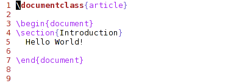
We can see that the .tex document doesn’t really contain much. First we’re defining the document to be an article and then including the contents of the article inside the begin and end document. We’re including a new section with a title Introduction and including a static text “Hello World!”. We can compile the .tex document into the PDF document with the pdflatex command and specifying the name of the .tex file as an argument. The resulting PDF then looks like this shown in the picture below:
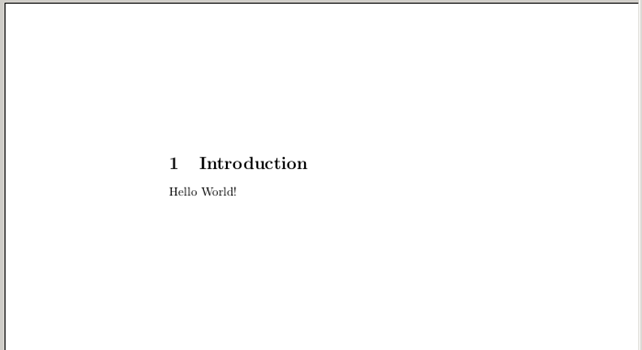
We can see that the PDF document really doesn’t contain very much, only the text we’ve actually included and no pictures, JavaScript or other elements.
8. Example 1
Let’s take a look at the PDF document structure, which is presented in the output below:
%PDF-1.5 %ÐÔÅØ 3 0 obj << /Length 138 /Filter /FlateDecode >> stream ... endstream endobj 10 0 obj << /Length1 1526 /Length2 7193 /Length3 0 /Length 8194 /Filter /FlateDecode >> stream ... endstream endobj 12 0 obj << /Length1 1509 /Length2 9410 /Length3 0 /Length 10422 /Filter /FlateDecode >> stream ... endstream endobj 15 0 obj << /Producer (pdfTeX-1.40.12) /Creator (TeX) /CreationDate (D:20121012175007+02'00') /ModDate (D:20121012175007+02'00') /Trapped /False /PTEX.Fullbanner (This is pdfTeX, Version 3.1415926-2.3-1.40.12 (TeX Live 2011) kpathsea version 6.0.1) >> endobj 6 0 obj << /Type /ObjStm /N 10 /First 65 /Length 761 /Filter /FlateDecode >> stream ... endstream endobj 16 0 obj << /Type /XRef /Index [0 17] /Size 17 /W [1 2 1] /Root 14 0 R /Info 15 0 R /ID [<1DC2E3E09458C9B4BEC8B67F56B57B63> <1DC2E3E09458C9B4BEC8B67F56B57B63>] /Length 60 /Filter /FlateDecode >> stream ... endstream endobj startxref 20215 %%EOF
There’s quite a lot of the necessary elements to create such a simple PDF document, so we can imagine how a really complicated PDF document would look. We also need to remember that all the encoded data streams were removed and replaced with three dots (as follows: ‘…’) for clarity and brevity.
Let’s present each of the PDF sections. The Header can be seen in the picture below:
The Body can be seen in the picture below:
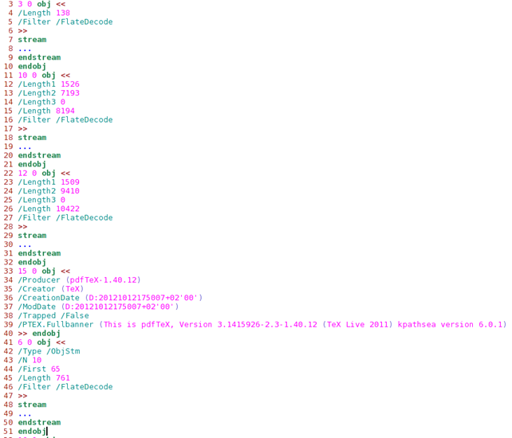
The Xref section can be seen in the picture below:
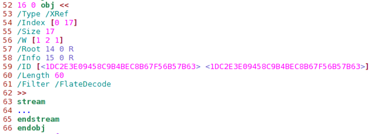
And last, the Trailer section is represented below:
We presented all of the sections of the PDF document, but we still have to analyze them further. The header of the PDF document is standard and we don’t really need to talk about it, and let’s leave the body section for later. This is why we must first take a look at the Xref section. We can see that the offset from the beginning of the file to the Xref table is 20215 bytes, which in hexadecimal form is 0x4ef7. If we take a look at the hexadecimal representation of the file as we can get with the xxd tool, we can see what’s presented in the picture below:
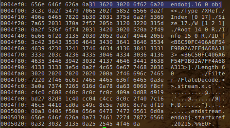
The highlighted bytes lie exactly at the start of the offset 20125 bytes from the beginning of the file. The preceding 0x0a bytes is the new line and the current 0x31 bytes represents the number 1, which is exactly the start of the Xref table. This is why the Xref table is represented with an indirect object with an ID 16 and generation number 0 (this should be the case for all objects, since we just created the PDF document and none of the objects has been changed yet; if we look at the whole PDF document we can see that this is clearly true; all objects have a generation number zero).
The /Type of the indirect object classifies this as an Xref table. The /Index array contains a pair of integers for each subsection in this section. The first integer specifies the first object number in the subsection and the second integer specifies the number of entries in the subsection. In our example the object number is zero and there are 17 entries in this subsection. This is also specified by the /Size directive. Note that this number is one larger than the largest number of any object number in the subsection. The /W attribute specifies an array of integers representing the size of the fields in cross-reference entry. [1 2 1] means that the fields are one byte, two bytes and one byte.
After that there is the /Root element that specifies the catalog directory for the PDF document to be object number 14. The /Info is the PDF document’s information directory that is contained in object number 15. The /ID array is required because the Encrypt entry is present and contains two strings that constitute a file identifier. Those two strings are used as input to the encryption algorithm. The /Length specifies the length of the encryption key in bits; the value should be multiple of 8 in the range 40 t o128 (default value is 40). In our case the length of the encryption key is 60 bits. The /Filter specifies the name of the security handler for this document; this is also the security handler that was used to encrypt the document. In our case this is FlateDecode, which encodes the data using zlib/deflate compression method.
We can see that the other part of the Xref table is compressed, so we can’t really read that. We could of course applied some zlib decompression algorithm over the compressed data, but there’s a better option. Why would we write a program for that if a tool already exists? With pdftk we can repair a PDF’s corrupted Xref table with the following command:
# pdftk in.pdf output out.pdf
After that the out.pdf file contains the following Xref and Trailer sections:
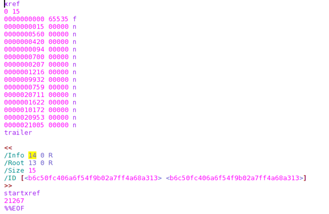
Clearly the /Root and /Info object numbers have changed and other stuff as well, but we got the trailer and xref keywords that define the Xref table. We can see that there are 14 objects in the Xref table.
We could go on and try to decode other sections as well, but I guess this is out of the scope of this article. Next, we’ll rather check the document that isn’t encoded.
9. Example 2
Let’s take a look at the sample PDF document that is accessible here: www.stluciadance.com/prospectus_file/sample.pdf. Some of the stream objects are encrypted, but aren’t so important now. Since we already know how to handle PDF documents, we won’t lose too many words on simple stuff. Let’s open that PDF in a text editor, like gvim and check out the Trailer section. We must know by now that all PDF documents should be read from the end to the start. The Trailer is represented in the picture below:
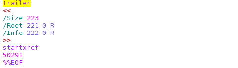
Let’s also present the Xref with just a few objects (the rest of them were discarded for clarity):
We can see that the /Root of the PDF document is contained in the object with ID 221 and there is additional information in object 222. The object 221 is the most important object in the whole document, so let’s present it; it can be seen in the picture below:
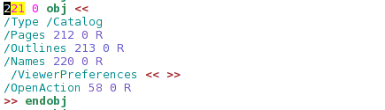
We can see that the object is indeed the Document Catalog. The Page Tree object is 212, the Outlines object is 213, the Names object is 220 and the OpenAction object is 58. We haven’t talked about any other types than Page Tree object, so we’ll continue with the Page Tree talk only.
The Page Tree object with an ID 212 is represented in the picture below:
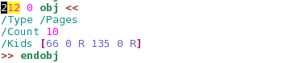
So the 212 object contains the actual pages of the PDF document. It contains 10 pages, which is exactly right (we can check this out if we open the PDF file with any PDF reader and check the number of pages). We know that the Kids attribute specifies all the child elements directly accessible from the current node. In our case, there are two direct child nodes with an object id 66 and 135. The object 66 is presented below:
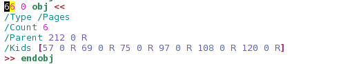
The object 66 contains other child elements with an ID 57, 69, 75, 97, 108 and 120.
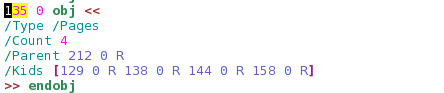
The object 135 further defines objects 129, 138, 133 and 158.
If we count all the elements, we can see that there are exactly 10 elements, which means 10 pages out of 10 pages. This further implies that all of the presented objects are in fact the actual pages of the PDF document and don’t contain any further children nodes. All of the presented objects are declared similarly, so we won’t look at each of the objects in turn. Instead, we’ll just take a look at one object, namely the object 57. The object 57 contains is declared as follows:
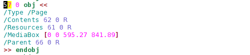
We can see that the object’s type is /Page, which directly implies that this is a leaf node that presents one of the pages of the PDF document. The contents of that PDF page can be found in an object 62; that object is presented in the picture below:
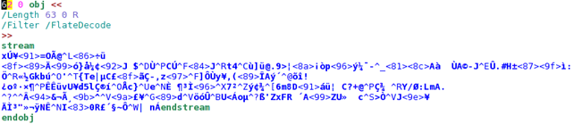
We can see that the actual content of the PDF page is encoded with the FlateDecode, which is just a simple zlib encoding algorithm.
10. Conclusion
We’ve seen two examples of how PDF documents can be constructed. With the knowledge we obtained, we can start generating incorrect PDF documents and feeding them to the various PDF readers. In the case that a certain PDF reader crashes while reading a certain PDF document, that document contains something that the PDF reader couldn’t handle and crashes. This implies the possibility of a vulnerability, which would need to be studied further.
At the end, if the vulnerability provides to be present, we can even write a PDF document that contains malicious code that is executed when the victim opens the PDF document with the vulnerable PDF reader on their target machine. In such cases, the whole machine might be compromised, since arbitrary malicious code can be executed just by opening a malicious PDF document.
INTERESTED IN LEARNING MORE? CHECK OUT OUR ETHICAL HACKING TRAINING COURSE. FILL OUT THE FORM BELOW FOR A COURSE SYLLABUS AND PRICING INFORMATION.
Ethical Hacking Instant Pricing – Resources
References:
[1]: The PDF File Format, accessible on: http://wwwimages.adobe.com/www.adobe.com/content/dam/Adobe/en/devnet/pdf/pdfs/PDF32000_2008.pdf.